High-speed Swiss security, rebuilt from the ground up.
Connect in one click with WireGuard, NetShield ad-blocking, VPN Accelerator, Secure Core, and intelligent multi-server balancing.
New system tray app
Connect, disconnect, and change your default connection or profile directly from the Windows system tray flyout.
Direct LAN connections
Seamlessly access printers, speakers, and local network storage (LAN) while keeping your internet traffic encrypted.
Active port number on home
When port forwarding is enabled, view and copy your live NAT-PMP port number right from the home screen.
Security that never slows you down
Proton VPN Next combines next-generation tunneling protocols with hardware-accelerated routing and DNS-level threat protection.
Protect yourself from ads, trackers, and malware
NetShield filters DNS requests before they ever load in your browser. Block malicious domains, stop intrusive cross-site tracking scripts, and speed up page load times while saving bandwidth.
- ✓ Block malware & phishing domains automatically at the network layer.
- ✓ Eliminate video & banner ads across browsers and desktop apps.
- ✓ Live telemetry counter tracks ads blocked, trackers stopped, and data saved.
Boost VPN speeds by up to 400% over long distances
Distance and TCP congestion normally degrade VPN throughput. VPN Accelerator uses multi-threaded packet processing and optimized TCP flow control to deliver full gigabit speeds even when connected across continents.
- ✓ Smart server selection automatically picks low-load nodes in every country.
- ✓ Native WireGuard kernel integration for sub-second handshakes and minimal CPU overhead.
- ✓ Stable long-session keepalives prevent random disconnects during gaming or downloads.
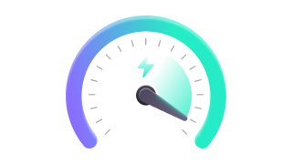
Watch your favorite content from anywhere in 4K
Access region-locked broadcasts, live sports, and global entertainment libraries without buffering or bandwidth throttling from your ISP.
- ✓ No data caps or speed limits — stream in 4K UHD with zero ISP throttling.
- ✓ Dedicated P2P & BitTorrent routing with active port forwarding support.
- ✓ One-click country switching across North America, Europe, and Asia-Pacific.
Multi-hop routing and leak-proof network defense
Secure Core routes your traffic through hardened servers in privacy-friendly jurisdictions (Switzerland, Iceland, and Sweden) before exiting to your destination country, while Advanced Kill Switch blocks all non-VPN traffic if your connection drops.
- ✓ Double-hop encryption protects your real IP even if an exit node is monitored.
- ✓ Standard & Permanent Kill Switch prevents accidental IP or DNS leaks across reboots.
- ✓ Split Tunneling (Standard & Inverse) lets you choose exactly which apps use the VPN.
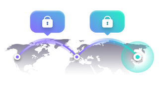
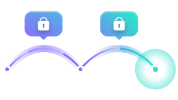
Multi-Hop Tunnel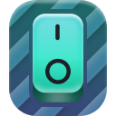
Kill Switch OnInspect every metric in real time
Click any metric inside the Proton VPN Next desktop client to open detailed flyouts for throughput, server load, IP masking, ISP protection, and Smart Routing.
Real-Time Session Traffic
Monitor live download and upload speeds alongside total session volume with hardware-accelerated graphing.
Instant IPv4 & IPv6 Masking
Hide your physical location and personal IP address behind Swiss-engineered VPN exit nodes with built-in leak protection.
ISP & Public Wi-Fi Defense
Prevent your internet service provider or untrusted Wi-Fi networks from inspecting your DNS queries or throttling video streams.
Live Server Capacity
View real-time server utilization before connecting, or click "Change Server" to hop to a low-latency node immediately.
WireGuard & Stealth
Automatically adapts between WireGuard UDP, TCP, and TLS Stealth to bypass strict firewalls and network censorship.
Smart Routing Technology
Provides secure access in high-risk regions using hardened proxy routing located in privacy-safe countries.
Every advanced tool built right into the client
Designed for power users, gamers, and privacy advocates — configure every detail of your connection directly from the Proton VPN Next desktop interface.
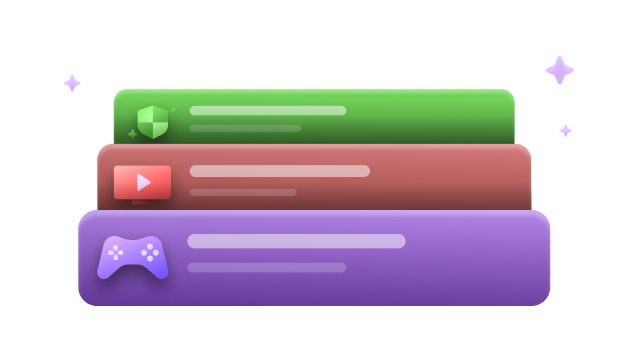
Custom Connection Profiles
Create tailored presets for Streaming, Gaming, P2P Downloads, or Work with custom protocols, countries, and NetShield settings.
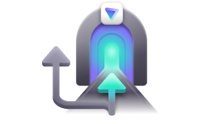
Split Tunneling
Exclude specific apps or IP addresses from the VPN tunnel — or use Inverse mode so only chosen apps route through the VPN.
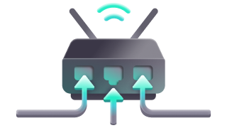
NAT-PMP Port Forwarding
Maximize P2P seeding speeds and host game servers behind the VPN with one-click dynamic port assignment and copyable port numbers.
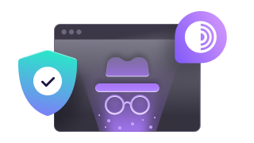
Tor over VPN
Route traffic through the Tor anonymity network with a single click, accessing .onion sites directly in your standard browser.
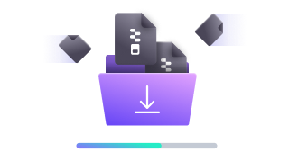
Dedicated P2P Support
Optimized high-throughput servers designed for large file transfers and peer-to-peer sharing without bandwidth throttling.
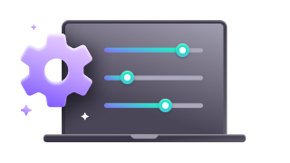
Custom DNS & NAT Type
Configure custom DNS servers, toggle Moderate NAT (Type 2) for online multiplayer gaming, and switch between WireGuard and OpenVPN.
Connect across the globe with intelligent server balancing
Choose your preferred country or let Fastest Country & Random Server balancing connect you to the lowest-load 10 Gbps server automatically. Clicking "Change Server" cycles cleanly to a fresh node every time.
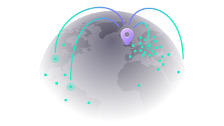
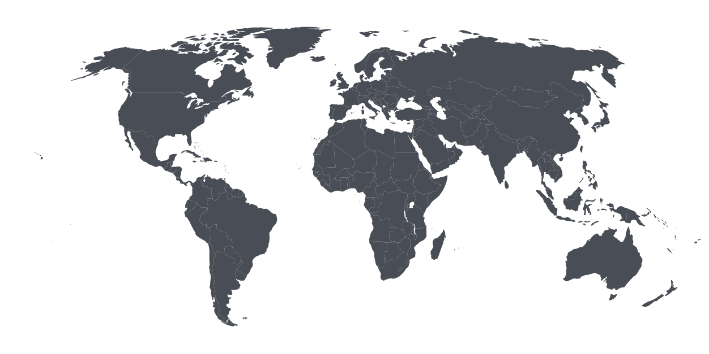
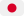
Japan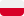
PolandReady in under two seconds.
Proton VPN Next ships with a custom high-speed native installer (`ProtonNext-Setup.exe`) that extracts all 2,313 application files in ~1.45 seconds, configures Desktop & Start Menu shortcuts, and launches straight into the redesigned client.
7F6C53095F39826DC9753EE19FFC78F592E97C398209E4FE195ED63975982F8A
Frequently asked questions
Everything you need to know about installing and using Proton VPN Next on Windows.
ProtonNext-Setup.exe using the button above and run the installer. The native multi-threaded setup wizard extracts the entire WinUI 3 desktop suite in under 2 seconds, creates Desktop and Start Menu shortcuts, and launches Proton VPN Next immediately.